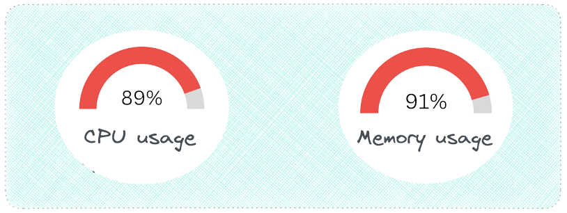
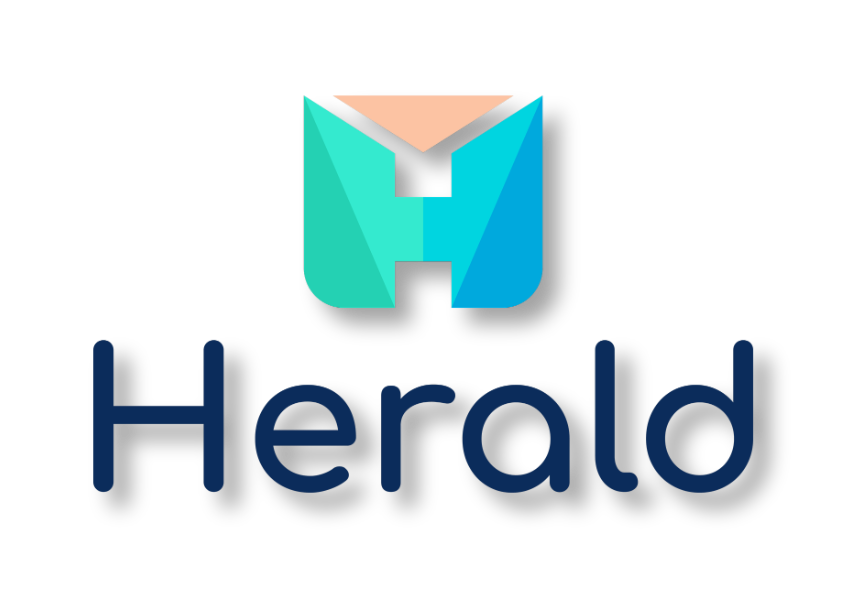

Case Study
1. Introduction
Herald is an observability solution that simplifies deployment of
the ELK stack, a popular set of tools used for monitoring the
health and performance of software systems. It allows software
developers to conveniently collect and explore telemetry data,
including logs, traces, and metrics, through a single,
user-friendly interface.
It may be unclear why small applications need an observability
solution. Smaller apps typically have fewer components and fewer
interactions between those components compared to larger apps. But
as those applications grow in size and complexity, monitoring
their health and performance and diagnosing problems when failures
occur becomes increasingly challenging.
For example, a developer may start by checking logs to diagnose an
issue. In a smaller app, those logs are likely located in a single
place, making it easier to isolate the problem. But in a more
extensive app, the various components may produce their logs in
separate locations. In this case, the developer needs help
locating the source of the error.

That’s where observability helps. Observability gives organizations
a holistic picture of the health and performance of their software
systems. As a result, organizations can detect and diagnose issues
much faster than they otherwise would. Observability has become
increasingly popular due to the growing complexity of software
systems and the exponential increase in the number and types of
issues organizations can encounter.
Below we look more deeply into what observability is, why it’s
important, and the challenges involved in implementing it. Then we
explore some existing observability solutions. We then take a
closer look at what Herald is and what it does. Finally, we outline
some of the design decisions we made and implementation challenges
we faced in building Herald.
2. Observability
Observability is the ability to understand how a system is
functioning based on its outputs and behaviors. Data is used to
provide a holistic view of a system, allowing developers and
operators to understand how a system is functioning and helping
identify issues that may be impacting its performance.

Observability uses three types of telemetry data, often referred to
as the three pillars of observability: logs, traces, and metrics.
This data provides visibility into a software system and allows
development teams to get to the root cause of various issues to
improve performance. Below we take a closer look at each type of
data.
2.1 Logs

Logs are records of events or messages a software application or
system generates. They are typically very detailed and provide
information about a specific event or action within a software
system. Information contained in logs includes:
-
Timestamps: The time at which an event occurred
-
Message content: A description of the event, error, or action
taken
-
Severity level: A classification of the importance or severity
of the event, such as "debug", "info", "warning", or "error"
-
Contextual information: Additional information related to the
event, such as user or device information
By collecting this information, logs provide a record of system
activity that can be used to identify issues, track down bugs, and
gain insights into the behavior and performance of the system.
To further understand the role of logs, it is helpful to delve into
an example of how logs can be used to diagnose and solve issues.
Consider a web application experiencing slow response times and
occasional errors when users try to upload images.
To diagnose the problem, the development team examines the
application's logs. They notice several log messages related to
failed image uploads, which provide error codes and additional
information about the nature of the failures.

Based on this information, the development team can identify
several issues contributing to the slow upload times and error
messages. They find the application's image upload functionality is
not optimized for handling large files and is thus causing slow
response times and occasional failures. Additionally, they discover
users have been trying to upload unsupported file types.
With this information in hand, the development team can make
changes to the application's code and configuration to improve the
performance and stability of the image upload functionality.
2.2 Traces
Tracing is a method of analyzing a software system by collecting
data about the different stages of a request as it passes through
various components or services of the system. It involves creating
a "trace" that includes information about each step of the request.
Each request is assigned a uniquely generated ID. This ID provides
context for the trace, ensuring that specific events that take
place during the request lifecycle are correlated with each other.
The ID is passed from one service to another as the execution of
the request progresses, propagating the context throughout the
request lifecycle.

A trace comprises one or more spans. A span represents a specific
piece of work performed by a specific service within the request
path, such as an HTTP request or a call to a database. Spans
contain important information, such as the start and end times of
the work, as well as any metadata that might be relevant to
understanding the span.
The trace can help engineers identify the different services the
request passes through and how they interact with each other. By
analyzing a trace, developers can determine where the request spent
the most time, and which services were involved. This information
can be used to identify performance bottlenecks, optimize the
system, and improve the user experience.
2.3 Metrics

Metrics are like vital signs for a software system. They are a
numeric representation of data measured over intervals of time.
They help developers understand the health of a system. By setting
performance goals and baselines, metrics allow developers to track
whether a system is meeting its targets and catch problems before
they become critical.
There are different types of metrics, including:
-
Resource utilization metrics, such as CPU usage, memory usage,
disk space usage, and network bandwidth usage, measure the number
of resources the system uses.
-
Performance metrics, such as response time, latency, and
throughput, measure the system's responsiveness and how quickly
it processes requests.
-
Error rate metrics, such as the number of errors, exceptions, or
failures within the system, measure the frequency of errors and
help administrators identify areas that need improvement.
-
Availability metrics, such as the percentage of time the system
is up and running, measure the system's uptime and downtime
Metrics can alert developers to current or potential problems
impacting their systems. Metrics on CPU and memory usage might
indicate that the system’s resources are at capacity and may need
to be scaled.

2.4 Integrating Logs, Traces, and Metrics
Logs, traces, and metrics work together to provide developers with
observability of their software systems, allowing them to diagnose
issues and improve system performance. To illustrate how developers
can use logs, traces, and metrics together to diagnose a problem
and help them fix it, let’s walk through an example.
Suppose a developer is responsible for a web application that
allows users to purchase items online. Upon checking some metrics
related to the performance of the app, the developer notices that
the average response time and error rate for the app’s checkout
page have increased. They suspect there may be an issue causing the
slowdown.

Based on these metrics, the developer uses tracing to follow a
request through the system and pinpoint where a potential issue may
be occurring. They choose a recent transaction that experienced a
slow response time and use a tracing tool to follow the request as
it moved through the system.
The tracing tool shows that the request spent a significant amount
of time in a particular microservice responsible for verifying the
user's payment details. The developer suspects there may be an
issue with this microservice and that further investigation is
required to track down the cause.
In the logs, the developer sees a large number of errors related to
the payment gateway API being used by the microservice. The logs
also show that the payment gateway API has recently changed its
authentication method, which may be causing the errors.

Based on this information, the developer updates the microservice
to use the new authentication method for the payment gateway API.
They deploy the updated microservice to production and monitor the
application's metrics, traces, and logs to verify the issue has
been resolved.
Alone, each pillar of observability provides valuable information
but not a complete picture. The metrics alerted the developer to
the issue, the tracing helped them pinpoint where the issue was
occurring, and the logs provided more detailed information about
the root cause of the issue. By having insight into all three,
developers get complete visibility of their system’s health and
performance
2.5 The Challenge of Implementing Observability
Knowing that observability is important is one thing; making
software systems observable is another. How does a development team
aggregate their telemetry data into a single location in order to
be visualized and analyzed?

The solution to this problem involves solving several smaller
problems. Let's examine each of them.
Collection and Shipment
The first problem that needs to be solved is how to collect the
data. Typically, this is accomplished with a collection agent
installed on each component of the software system that is going to
be observed.
This collection agent is responsible for collecting the data from
the component and shipping it to some central location.

Processing and Transformation
But before the data is shipped to the central location, there is
another problem to solve. At this point, the data is still raw and
unstructured. It will need to be processed and transformed into a
form or structure suitable for a particular analysis. Thus, a data
processor is needed before the data goes anywhere else.
Storage
The next problem concerns the central location. There needs to be
some data storage component that can be queried for the purpose of
visualization and analysis.

This data store should handle the continuous inflow of data and
enable fast and efficient queries for real-time data analysis.
Visualization
The final problem to be solved is how to visualize that data so it
can be gleaned for meaningful insights. What is needed is an
intuitive and easy-to-use UI.
Thus, to achieve observability, a solution is needed that performs
the following four functions: data collection and shipment; data
processing and transformation; data storage; and data visualization.

Next, we look at some of the existing solutions that aim to solve
the observability problem for development teams.
3. Existing Solutions
3.1 Commercial Solutions

Several companies offer various observability tools to satisfy most
developers' needs. Examples include Datadog, New Relic, Honeycomb,
and Logz.io. One of the benefits of using these observability tools
is that they are typically easy to set up and feature-rich. Some of
those extra features include infrastructure monitoring, network
monitoring, and error tracking.
However, some commercial solutions may not be a good fit for
software teams concerned about data and infrastructure ownership.
In particular, teams working with sensitive data or in highly
regulated industries may be wary of using third-party solutions due
to concerns about data privacy, security, and compliance. These
teams may prefer to keep complete control over their data and
infrastructure, including the ability to choose where and how it is
stored and processed. Using a commercial solution may require
relinquishing some of this control.
Commercial solutions also come at a cost that may be too high for
smaller companies.
3.2 DIY Open-Source Solutions
In addition to commercial observability solutions, various
open-source observability tools are available that can provide a
cost-effective alternative for developers. These tools offer
various features for collecting, analyzing, and visualizing log,
metric, and tracing data while also providing flexibility in terms
of data ownership and infrastructure. Examples include
OpenTelemetry, Prometheus, Jaeger, fluentd, and the ELK stack,
which consists of Elasticsearch, Logstash, and Kibana.
While open-source observability tools offer many advantages, such
as data ownership and cost savings, deploying and managing these
tools can be significantly more complex than commercial solutions.
Piecing together various observability tools in order to collect,
process, store, and visualize telemetry data can require
substantial time and expertise. This may not be feasible for
smaller development teams. This complexity is abstracted away with
the commercial solutions.
3.3 Herald

That’s where Herald comes in. Herald bridges the gap between
commercial and open-source solutions. It is an open-source
observability solution that abstracts away the complexity of
setting up open-source tools while offering development teams the
ability to maintain data and infrastructure ownership. Further, the
only cost of using Herald is the cost of provisioning and using the
Amazon Web Services (AWS) resources on which it is deployed.
Herald was built for growing applications that have reached a size
where the ability to monitor their health and performance has
become an issue. The growing complexity of these apps requires
their development teams to consider a comprehensive observability
solution. What is needed is a solution comprised of a set of
battle-tested observability tools.
Herald is built on the ELK stack, a popular set of open-source
tools commonly used for log management and analysis. The full ELK
ecosystem also offers tools for trace and metric data. The
combination of these tools provides a complete observability
solution.
Combining other open-source tools into a complete observability
solution is also possible. But managing these other tools
necessitates developers becoming familiar with the separate
documentation associated with each tool. These docs may be
sufficient for understanding how each tool works on its own but are
less helpful when the tools are combined.
The ELK stack, on the other hand, is managed by a single
organization: Elastic. Elastic provides unified documentation on
the entire stack, making it easier to troubleshoot issues that may
arise between the various components of the stack. There is also a
strong support community on which developers can rely.
The comprehensiveness of its documentation across the stack, the
strong community of supporters, and its popularity make the ELK
stack an ideal choice for developers just getting started with
observability. The ELK stack is also battle-tested as several
commercial solutions use it in their own offerings.
Setting up the ELK stack can be challenging, particularly for
developers new to observability. The configuration details involved
in setting up each component of the stack for complete
observability can be overwhelming. However, Herald simplifies the
process by abstracting away the complexity, providing an effortless
deployment of the stack. With just a few commands, developers can
quickly get started with Herald.
Below, we take a closer look at Herald and what it does.
4. The Herald Pipeline
The Herald pipeline comprises two separate data ingestion points,
one for logs and another for traces and metrics, a data storage
component, and a data visualization component. The following
diagram illustrates the flow of data from ingestion points through
to visualization.
This pipeline encompasses the main components required to achieve
observability: data collection and shipment; data processing and
transformation; data storage; and data visualization. Below, we
look at each of these components in more detail.
4.1 Data Collection and Shipment
Recall the first problem to solve to achieve observability is
collecting data from the various components of a software system
and shipping them to some central location. Herald uses two
separate tools for data collection and shipment: Filebeat for log
data and the Application Performance Monitoring (APM) Agent for
traces and metrics data.
Filebeat for Log Collection and Shipment

Filebeat is a collection agent designed for collecting and shipping
log data. Its primary function is to continuously scan for new log
data and send such data to Logstash, where it is processed and
transformed.
Filebeat is not part of the Herald deployment but is installed
separately on the user's application servers. After installation,
it must be configured to monitor specific log files and output the
data to Logstash.
APM Agent for Traces & Metrics Collection and Shipment
For collecting and shipping traces and metrics data, we have
Elastic APM Agents. APM agents are open-source libraries that
collect data generated by an application. These agents are written
in the same programming language (e.g. Golang, Python, or Node.js)
as the application and can be easily installed like any other
library.
Once installed, the user then instruments their code to allow the
agents to collect tracing and metrics data. The APM agents then
ship the data to the APM Server for processing.
4.2 Data Processing and Transformation
The next problem that needs to be solved to achieve observability
is data processing and transformation. This component of the
pipeline must be capable of processing data for particular analyses
and transforming data into a format that is accepted by the data
storage component. Herald uses two separate tools for data
processing and transformation: Logstash for logs and the APM Server
for traces and metrics.
Logstash for Log Data Processing
Within the Herald pipeline, Logstash is configured to ingest data
from Filebeat. The user must configure Logstash with an appropriate
filter that enables a specific transformation of the ingested data
to support a specific application use case. For example, a user may
use the “geoip” filter to add information about the geographical
location of IP addresses. Once the data is processed, it is sent to
Elasticsearch for storage and indexing.
APM Server for Traces & Metrics Processing

The APM Server comprises two parts: the Elastic Agent and the APM
Integration. Elastic Agents are installed on the user’s application
servers to receive different data types, such as metrics and
traces, from the APM Agents.
The Elastic Agent can be updated with configurations enabling the
collection of new or different data sources. The configurations are
implemented through agent policies. The APM Integration is one of
those configurations that gets specified within an agent policy.
The Elastic Agent with the APM Integration acts as the APM Server,
which lives entirely on the user’s application server. The APM
Server accepts tracing and metrics data from an APM Agent. The APM
Server then processes the data, which includes validating it and
transforming it into Elasticsearch documents before sending it on
to Elasticsearch.

4.3 Data Storage
The next component required to achieve observability is the data
storage component. The data store is where data will be housed and
made available for querying by the visualization component.

Elasticsearch
Elasticsearch is a distributed search and analytics engine and
document store. It stores complex data structures serialized as
JSON documents. Elasticsearch stores and indexes data in a way that
enables near real-time searching (i.e. within 1 second). It is a
durable data store, which means it can persist long term data as
needed. Within the Herald pipeline, Elasticsearch receives data
from Logstash and the APM Server. It acts as a storage component
that can be queried through Kibana to be visualized.
4.4 Visualization
The final problem to be solved in order to achieve observability is
the data visualization problem. Data sitting in the data store is
only good if it can be visualized and analyzed.
Kibana
Kibana is a powerful open-source data visualization and exploration
platform. It provides a user-friendly interface for searching,
analyzing, and visualizing large volumes of data in real-time. With
Kibana, you can search, observe, and analyze your data, and
visualize your findings in charts, gauges, maps, and graphs.
Viewing logs in Kibana:
Viewing traces in Kibana:

Viewing metrics in Kibana:

5. Our Solution: QMantis

There is a third solution that Novels and Barns could use: QMantis.
As discussed earlier, QMantis is an open-source observability tool
for GraphQL APIs, designed for small applications. With QMantis,
Novels and Barns gets to maintain control over their data without
needing to export it to a third-party.
QMantis is well-documented and designed for easy setup, reducing
time cost. Users are able to see both metrics and traces, all in one
dashboard, even though QMantis has fewer features than the
fully-managed cloud solutions.
Finally, QMantis is free and open-source. There are no time or
storage limitations, so Novels and Barns can invest their funds into
other business needs.
5.1 How Novels and Barns Can Use QMantis
After discussing the pros and cons of the various existing GraphQL
observability solutions, Novels and Barns has found QMantis to be
the best fit for their business.

Now, with QMantis, Novels and Barns' small development team can get
free metric and tracing coverage made specifically for GraphQL APIs,
without having to learn or implement any other observability
technologies. They can check their mobile application's usage by
monitoring its request rate, error rate, and overall latency. They
can also analyze and distinguish every request made to the GraphQL
endpoint.
Further, Novels and Barns can determine their application's usage
trends by analyzing each operation and resolvers' runtime. With the
growing success of their business and their recent surge in users,
they can more quickly investigate and address bottlenecks in their
mobile application, preventing high latency and ensuring customer
satisfaction.
Here is an overview of what QMantis offers.
5.2 An Overview of QMantis
5.2.1 Main Dashboard

The screenshot above shows what a QMantis dashboard may look like
for a user like Novels and Barns. The dashboard shows metrics and
traces side by side. Being able to view metrics and traces in the
same place provides insight into what is going on with the GraphQL
API. For example, on the top row are some metrics panels; here, the
request rate and error rate move together, as expected. However, in
the panels below the first row, it is evident that the average
latency of requests is spiking outside of any increase in traffic.
When metrics are seen alongside traces, it is clear that some
outliers are driving up the average latency time, and should be
investigated.
5.2.2 Analyzing Traces
With QMantis, the user can easily analyze traces for every request
made to the /graphql endpoint.
Below, we can see what a typical trace should look like for a simple
query when viewed using Grafana (QMantis' visual layer).

In this query, books from a particular author are fetched, along
with the genres of those books. Far on the right hand of the image,
in the condensed span section, there are multiple spans executing at
the same time. This is exactly what an efficient query looks like
when visualized.
Once the author is fetched, all the books related to that author,
and the genres related to that book, are fetched asynchronously. On
the left-hand side, it is possible to see exactly what is fetched
while each span executes. This visualization gives valuable insight
into the GraphQL resolver that was used to fetch this data and makes
it easy to see where any inefficiencies are negatively impacting a
server's response time.
5.2.3 Investigating Bottlenecks
When viewing traces from the QMantis dashboard, it is easy to spot
slow requests. With the growing success of the Novels and Barns'
business and their recent surge in users, they can use QMantis to
quickly investigate and address bottlenecks in their application. By
doing so, their team can efficiently respond to issues such as high
latency, contributing to customer satisfaction.

In the above image, there are some outlying traces. Sometimes, an
outlying trace is related to an operation that usually runs in line
with the rest of the GraphQL operations. If this is the case, then
the issue is usually related to something outside of the GraphQL
API, such as a temporarily overloaded database. In this case,
however, each of the outliers is related to the same GraphQL query
named allBooks (the operation name, as well as other relevant
information, can be seen when hovering over a trace), so it is time
to investigate that resolver.
5.2.4 Visualizing Resolver Runtime

By clicking on a trace, it is possible to get more detailed
information about that trace and its spans. Above is an individual
view of one of the outlying traces that was shown in the previous
image. Here, spans are executed synchronously, and information for
only 20 books is fetched in nearly half a second. What happens when
making much larger requests that fetch information for 100, or 1,000
books? This inefficient query defeats the purpose of switching to
GraphQL in order to improve response times and may increase response
time when compared to a REST API.

By examining the allBooks resolver function above, it is obvious
that the function can be optimized. This particular resolver returns
a promise, which in turn, returns a map of the original result,
which in turn, returns a promise that populates the genres field
once the authors field is populated for each book. There is a lot of
waiting, and it makes the response to this query unnecessarily slow.
Now, compare the above inefficient resolver to the resolver below,
which is much more efficient:


The above image shows trace information for the operation made using
the efficient resolver. In the above trace, spans execute
asynchronously. There are no significant gaps between span
executions, and latency time is now under 200 ms. In an expanded
view of this trace that shows all of its 156 spans, the first group
of asynchronous spans retrieves books, while the second group
retrieves authors and genres related to those books. Since it is
impossible to find the author or the genre of a book before knowing
what the book is, this is as efficient as this query can get. In
addition, this trace gives us confidence that this resolver could
return a much larger dataset without greatly increasing the response
time of the server due to its asynchronous nature.
This example may seem contrived and a little unrealistic, and it
probably is for such a simple query, but for people new to GraphQL,
or when dealing with more complicated resolvers, this is a big
issue. If a company like Novels and Barns did not have a GraphQL
observability tool set up, an inefficient resolver could easily be
pushed into a production environment and go unnoticed for weeks,
months, or even years.
QMantis provides insight into many areas of a GraphQL API, not just
resolver performance, but highlighting an inefficient resolver is
important for two reasons. First, inefficient resolvers can be very
hard to spot in a working API without proper observability, and
second, this demonstrates how QMantis can be used to track down an
issue all the way from the dashboard to a resolver execution.
Now that we have a better understanding of the features of QMantis,
let us discuss its architecture.
5.3 Architecture

This diagram gives an overview of the QMantis architecture. There
are two main overarching and interconnected components:
qmantis-express and qmantis-compose. On
the left, qmantis-express is a npm package with a
configured express-graphql server that is responsible
for generating the metrics and traces. On the right,
qmantis-compose lets the user deploy the QMantis
architecture on their own server using Docker in order to process,
export, store, and visualize incoming metrics and traces.
Now, to provide a better understanding, let us break up this
architecture into key phases.

The QMantis architecture is split up into four major conceptual
phases:
Phase 1: Generate Traces and Metrics
with a GraphQL server and OpenTelemetry SDKs
Phase 2:
Export Data for Processing and Storage
Phase 3:
Store Data with Promscale / TimescaleDB
Phase 4:
Visualize / Analyze Data with Grafana
5.3.1 Phase 1: Generate Data with the qmantis-express GraphQL server
and OpenTelemetry SDKs

The first phase of the QMantis architecture, which is part of the
qmantis-express component, is to generate the metrics
and traces. In order to eventually visualize the data on the
dashboard, the data has to be created first. QMantis uses
OpenTelemetry to generate and collect telemetry data such as metrics
and traces.
OpenTelemetry is an open-source project that is composed of a
collection of tools, including APIs and SDKs. It is the current
leading developer tool kit for generating, collecting, and exporting
telemetry data [5]. In QMantis' use case, we use OpenTelementry to instrument a
GraphQL API.
To create the telemetry data, we configured an existing GraphQL
server with observability extensions, added custom express
middleware functions, and added two pre-configured OpenTelemetry
Node SDKs (one for tracing, the other for metrics).

This is a crucial phase of the QMantis architecture because it is
when we ensure the data we generate is specific to GraphQL. For
example, the qmantis-express component checks the
response object to see if there is an errors property. If there is
one, it updates the error rate counter. Also, one of the panels in
the QMantis dashboard has all traces that contain an error. As
mentioned earlier, developers cannot rely on a response status code
to filter traces for errors, as most GraphQL responses, regardless
of their success, return a status code of 200. To address this, we
added custom error tags as needed, making it easy to filter and
visualize all traces with errors.
Additionally, the majority of GraphQL requests are POST requests.
The default name of a trace is the corresponding request HTTP
method, however, this is not meaningful to the user, since the
majority of traces would be named “HTTP POST”. Therefore, our team
altered each trace so that the user could distinguish between traces
more easily. Our custom middleware fetches the operation name from
the request body. If the user does not provide a name, then the
operation name becomes the operation type.
5.3.2 Phase 2: Export to the OpenTelemetry Collector and Prometheus

The Export phase, the 2nd phase of the QMantis architecture, is part
of the qmantis-compose component. Once telemetry data
is created, it needs to be exported before anything useful can be
done to it.
In the case of traces, the data is exported to the OpenTelemetry
Collector. The OpenTelemetry Collector is a central component that
handles additional steps such as batching and processing of traces
[6]. It consists of three main elements: receivers, processors, and
exporters, as seen below:

A receiver is how data gets into the collector and an exporter is
how data is sent to a specified destination. Processors are run on
data between being received and being exported, transforming it into
a common format, or adding metadata.
For the purposes of the QMantis Architecture, the Collector offloads
the responsibility of the application to manage the collected data,
which reduces overhead. Using the collector, our custom processors
add useful GraphQL information to each trace. Some of the spans in a
trace are given customized names, so, for example, users can
distinguish one request's field resolver from another without having
to click into each span for more information.
In the case of metrics, they are exported to Prometheus, which is an
open-source systems monitoring service that collects and stores
metrics as time-series data, meaning metrics information is stored
with the timestamp at which it was recorded. The purpose of
exporting metrics to Prometheus is to make the data compatible for
the next phase.
Now that the data has been generated and processed into a readable
and more meaningful format, making it easier to work with for
observability purposes, this data can be exported to long-term
storage, which is the following phase.
5.3.3 Phase 3: Storage with Promscale / TimescaleDB

The third phase of the QMantis architecture, which is part of the
qmantis-compose component, is storage. Before we can
visualize and analyze telemetry data on Grafana, data needs to be
stored somewhere. Long-term storage is useful for users because they
can access not only current data, but also older data, which will be
very helpful if they want to analyze trends in their GraphQL API.
As time is a key component of how QMantis generates and reads data,
we chose to use a time-series database, as it is optimized for
time-stamped data. Time matters. If there is a potential problem, it
is important to know if it happened at 1 pm or 8 pm. If a user wants
to do maintenance during downtime, they need to know when there are
the downtimes. Also, time-series databases support a high rate of
inserts and a low rate of modifications and deletions. This is a
great fit for QMantis' use case because when a metric or trace is
created, there is no need to ever change it—the user only needs to
insert it and read it.
Specifically, QMantis uses TimescaleDB, an open-source time-series
database powered by SQL, with Promscale, a backend extension that
connects telemetry data to TimescaleDB. This database has no time
limit or cost involved in storing telemetry data for users.
Moreover, it allows us to keep everything in one place, therefore
simplifying our architecture, since we can store both metrics and
traces data on the same database.
Another main benefit of using TimescaleDB is that it leverages
PostgreSQL to store data, an established data store that is used
widely among developers. The choice to use TimescaleDB means that it
is easier for users to understand how their data is stored. Also,
using Promscale and Timescale for data storage allows users to
easily connect that data to Grafana, giving them the ability to
fully leverage Grafana's built-in queries.
5.3.4 Phase 4: Visualize / Analyze with Grafana

Finally, the last phase of the
qmantis-compose component involves visualizing and
analyzing data. To visualize the data, our team chose to use
Grafana, a popular open-source tool for observability dashboards
that comes with many options and functionalities. Our team
pre-configured an observability dashboard so that users can view and
analyze their application's request rate, request latency, error
rate, all their traces, and error traces. Grafana connects directly
to the Promscale connector and TimescaleDB in order to obtain
metrics data, as well as Jaeger, an open-source tool for end-to-end
distributed tracing, to query the traces data. In the design
decisions section, we will discuss in detail why we chose Grafana as
our visualization tool.
5.3.5 Overall View of QMantis Architecture's Components

To recap, the above illustrates the QMantis architecture and its two
main components: qmantis-express (which consists of the
Generate phase) and qmantis-compose (which consists of
the Export, Store, and Visualize phases).
In summary, qmantis-express is a npm package, composed
of OpenTelemetry SDKs and a GraphQL server observability
configuration. It is responsible for generating the metrics and
traces data.qmantis-compose lets the user quickly and
seamlessly deploy the QMantis architecture on their own server using
Docker. It contains all the tools necessary to export, store, and
visualize GraphQL-specific observability data.
6. Design Decisions
Let us now go over some of the important design decisions we made
while developing QMantis.
6.1 Grafana vs Custom UI
When it came to visualizing data, our team considered two
options—building a custom user interface or using Grafana. A custom
UI would have provided two main benefits: we could have branded the
UI to add a QMantis-specific design, and we could have displayed
data more intuitively, especially for a first-time user. On another
hand, we would have to maintain a whole extra code base and any
updates to the UI would demand a lot of time.
Grafana, an industry-standard observability tool that many
developers are already familiar with, is extremely customizable.
Once a user has QMantis running, they can change the dashboard and
query settings to best fit their needs. To give an example, projects
at different points in the development cycle may want to query data
by different lengths of time, and Grafana makes that very easy.
Moreover, if our team decides to update the dashboard or panels in
the future, reconfiguration would be relatively simple.
Ultimately, the pros of building a custom UI did not outweigh the
pros of using Grafana, so we chose to go with Grafana.
6.2 GraphQL Server Choice
Early on in the process of building QMantis, our team considered
building our own GraphQL server. This would have given us control
over the implementation of the server and made it simple to generate
and collect data exactly how we wanted. However, if a developer had
an already existing GraphQL API, they would have had to change their
code to work with our less popular server in order to gain
observability. Taking this into consideration, we decided it would
be more useful to build a tool that could work with an already
widely used GraphQL server.
Another option was to use apollo-server, a popular
GraphQL server package. Note that this is different than the fully
managed Apollo Studio observability service. Our team considered
using apollo-server to give users the option to use a
GraphQL server that was framework-agnostic for Node.js. However,
this option had a major downside—the way
apollo-server is implemented makes it very difficult to
extract meaningful trace data, even when creating custom plugins to
extract this information.
In the end, we landed on express-graphql, a popular
JavaScript server for GraphQL, used by millions of developers around
the world. express-graphql does not currently have any
out-of-the-box observability options—paid or unpaid, and it is
highly customizable, allowing for developers to create extensions
with observability features. With this in mind, we built the first
iteration of QMantis using an extended
express-graphql server, providing an observability
service packaged with an already popular GraphQL server.
7. Implementation Challenges
7.1 Generating Metrics Data from express-graphql
Using express-graphql as our GraphQL server came with
significant challenges. As we did not have control over the
implementation of the server, our team had to be creative in order
to collect the needed data from request and response
objects—information that is essential to generating accurate and
GraphQL-specific telemetry data, a key feature of QMantis.
The two most difficult pieces of observability metrics data to
obtain were: the error count and the latency data for requests that
had 4xx or 5xx status codes. To get accurate information, the server
needed to access the response object before it was sent back to the
client. To do that, we relied on a function from the
express-graphql server to access the response object.
However, when the status code was 4xx or 5xx, the
express-graphql server did not execute that function,
so it no longer checked for errors or latency information.

At this point, we considered modifying the QMantis architecture and
even prototyped a custom GraphQL server to get this data. This
approach worked, and we were able to obtain the needed data, but it
came with the limitations mentioned above. Ultimately, we found
better solutions to these challenges: using an existing npm package
called response-time to obtain latency data, and
passing trace data to a custom function to accurately count errors.
7.2 Connecting Metrics with Traces
Another significant challenge was connecting metrics with traces.
Initially, we wanted to connect metrics with traces to make it easy
for the developer to go from spotting a potential problem to getting
detailed trace information. How would that work? When the developer
spots something worth investigating, such as an outlier metric data
point, or an increase in the error rate, they would be able to click
on the datapoint, taking them to a list of traces that occurred
within that time frame.
After a lot of research, we found that the only way to have this
feature in Grafana was to use Grafana Tempo, Grafana's solution for
a traces backend. Currently, Grafana Tempo is only compatible with
an object storage database, such as Google Cloud Storage, Amazon S3,
or Azure Blob Storage. That meant we would need a different database
to store traces data, adding extra complexity to the QMantis
architecture. Another option was to build a custom UI, which was not
ideal, as discussed previously.
This left us with the challenge of making it easy to go from metrics
to traces in our dashboard. To overcome this obstacle, we created
two trace panels, one that shows traces by latency, making it easy
to spot the outliers, while the other only shows error traces. As
both metrics and traces have a time-stamp, it is easy for the user
to filter the traces panels to look for the information they need.
It is also worth noting that, as of early 2022, the leading paid
observability solutions for GraphQL do not currently support linking
metrics and traces together.
8. Installing and Using QMantis
Starting up QMantis is simple and can be done in a few steps:

1. Install the
qmantis-express npm package. If
qmantis-express is not already installed, that needs to
be installed as well.

2. Clone the
qmantis-compose
repository. This repository can be cloned anywhere on your machine.

3. Import the QMantis variables
into your “main” file. This is the file that imports the schema and
starts up the express-graphql server for your API. It
is crucial to note that all of the QMantis variables need to be
imported before the express-graphql server, or there
may be some issues with collecting traces.

4. Set up the route handlers for
your /graphql endpoint. Note that the QMantis
registerLatency function needs to be passed to the
responseTime function as an argument and the main
qMantis function needs to take the GraphQL schema as an
argument and be passed to the express-graphql server.

5. Initialize the QMantis docker
container. cd into the
qmantis-compose repository and run
docker compose up. The docker images will start to show
in the terminal and the qmantis-compose container with
all the running images can be visualized on Docker Desktop.
6. That is it for setup! Now, you
will need some data before you can visualize it. If you have a
production server and are using QMantis with it, you can simply
deploy it and wait for requests to come in. If you are still in a
development environment, you can use GraphiQL or another tool of
your choice to make requests.
7. Once requests start to come in,
navigate to localhost:3000 and view the prebuilt
QMantis dashboard in Grafana.
9. Future Work
9.1 Expanding Metrics
Our team believes adding certain datasets to the dashboard could
improve the usefulness of QMantis. Namely, we would like to be able
to see how often certain operations are requested, and the average
latency of specific operations. These features would allow
developers to get a quick read on the efficiency of individual
operations, and prioritize potential problems based on how often an
operation is requested.
9.2 Connecting Metrics and Traces
As discussed earlier, metrics and traces are not directly linked in
the current iteration of the QMantis dashboard. This will not be a
simple issue to solve, but our team is interested in continuing to
explore ways to offer this feature. In the long run, linking metrics
and traces together would be incredibly useful for quickly and
correctly diagnosing application issues.
9.3 Adding More GraphQL Server Types
Our team built the first iteration of QMantis using a customized
express-graphql server but would like to continue
working on the aforementioned customized
apollo-server prototype to give it fully functional
observability features, as this would give developers the
flexibility to work with various Node.js frameworks, aside from just
Express. Another option would be to add servers that work for other
languages, such as Ruby and Go.
9.4 Incorporating Alerts
Many observability platforms offer alerts via text, Slack, or email
when an issue arises. This is an interesting feature that could be
added to QMantis in the future, so users can add automated alerts
that are triggered by specific problems. Alerts would offer a nice
alternative to constantly having to check the Grafana dashboard for
issues.
10. References
-
http://highscalability.com/latency-everywhere-and-it-costs-you-sales-how-crush-it
-
https://blogs.windows.com/windowsdeveloper/2014/03/20/instrumenting-your-app-for-telemetry-and-analytics
-
https://en.wikipedia.org/wiki/Telemetry
-
https://grafana.com/files/grafanacon_eu_2018/Tom_Wilkie_GrafanaCon_EU_2018.pdf
-
https://opentelemetry.io/docs/concepts/what-is-opentelemetry
-
https://opentelemetry.io/docs/collector